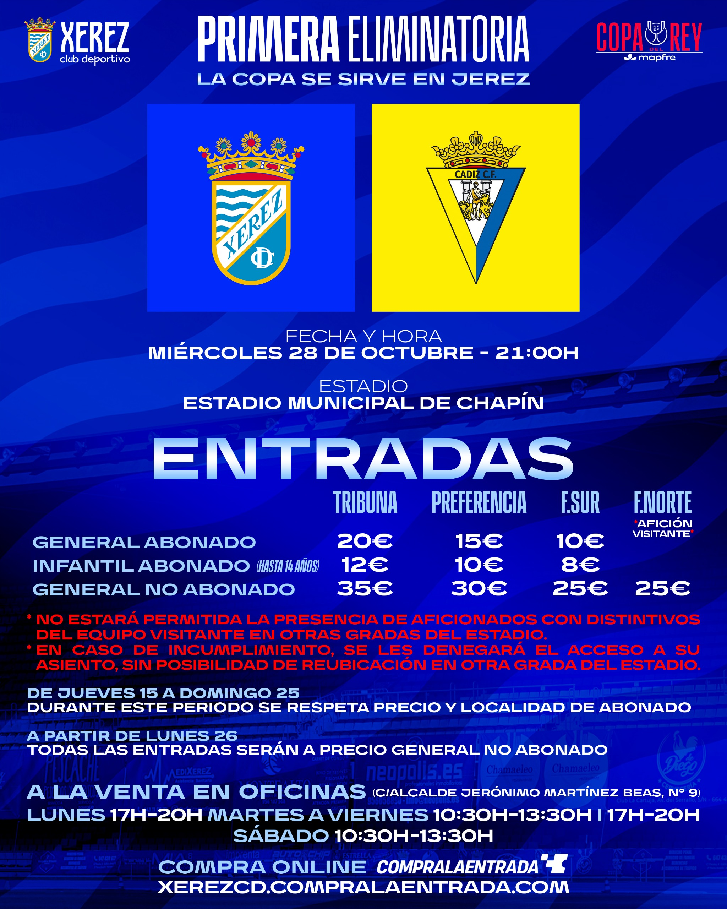

Tickets for the Xerez-Cádiz cup tie: 25 to 35 euros and discounts of up to 60 % for members

Image: Xerez CDThe club has not provided special or children's tickets for non-members for the provincial derby, so becoming a member is in practice the cheapest way to watch the match at Chapín
Xerez CD have announced ticket prices for the Copa del Rey match against Cádiz CF, which will be played at Chapín. A seat in the Tribuna will cost 35 euros, in Preferencia 30 and in the Fondo 25, without discount. Members will pay 20 euros in the Tribuna, 15 in Preferencia and 10 in the Fondo Sur, a discount of 43 %, 50 % and 60 % respectively.
A reduction that changes the sums
The discount represents a notable difference compared with what a non-member supporter will pay. That reduction encourages Jerez supporters who want to attend the derby to become members, the option that works out best for them compared with buying a single ticket. The member price applies until Sunday 25; from Monday 26, all tickets will be sold at the general price.
Cádiz supporters, in the Fondo Norte
Cádiz supporters travelling to Jerez will be placed in the Fondo Norte, and their ticket will cost 25 euros.
No special or children's tickets for non-members
Nor has the club made available special tickets or reduced-price tickets for children who are not members. Members aged up to 14 will pay 12 euros in the Tribuna, 10 in Preferencia and 8 in the Fondo Sur. Families wishing to attend with non-member children will therefore have to pay the general price.
A much-anticipated match
The tie, which pits Xerez against a Segunda División side, is shaping up as one of the most attractive of the season in Jerez. With the match set for Wednesday 28 October at 21:00, the club's challenge now is for the stands to live up to a match of this magnitude.
🇪🇸 Leer en español ← Back to home